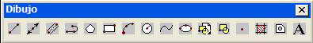
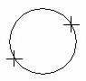
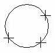
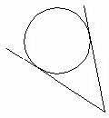
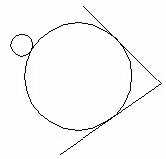
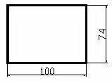

7. Barra de herramientas "Dibujo" (I).

Veamos qué podemos hacer con ella.
-
A partir de un punto central y un radio
-
A partir de un punto central y un diámetro
-
Tres puntos en la circunferencia
-
Dos puntos que determinen un diámetro
- Con el botón
- Desde el menú Dibujo - Círculo
- Escribiendo CIRCULO
1. Escribe CIRCULO
2. A la pregunta del punto central, pincha clic en medio de la pantalla.
3. A la pregunta del radio, escribe: 100
4. Deshaz la última acción.
5. Vuelve a escribir CIRCULO
6. Pincha clic en medio de la pantalla
7. Ahora, escribe D para elegir diámetro
8. Escribe 50 como diámetro.

|
 |
2 puntos (2p):
La línea entre los
dos puntos se utiliza como diámetro para crear un círculo.
|
|---|---|
|
 |
3 puntos (3p):
El arco de los tres
puntos se completa para formar un círculo. Este círculo se hace visible en
pantalla después de la segunda selección de punto.
|
|
 |
Tangente, tangente, radio (ttr):
Se seleccionan dos
objetos de la pantalla. AutoCAD puede construir el círculo calculando el
radio automáticamente.
|
|
 |
Tangente, tangente, tangente:
Se seleccionan los
tres objetos que harán de tangente con el círculo.
|
Dibujar rectángulos
Para dibujar un rectángulo podemos hacerlo de las siguientes formas:
- Con el botón
- Desde el menú Dibujo - Rectángulo
- Escribiendo la orden RECTANG
1. Inicia un rectángulo utilizando el método que quieras.
2. Pulsa un clic para fijar el primer vértice.
3. "Estira" hasta que quieras y pincha otro clic para fijar el vértice opuesto.
4. Inicia de nuevo la orden para crear otro rectángulo.
5. Escribe G cambiar el grosor.
6. Escribe 2
7. Marca el primer clic
8. Estira y marca el segundo clic.
9. Inicia de nuevo la orden RECTANG.
10. Marca el primer punto.
11. Como segundo punto, escribe: @100,74

1. Escribe la orden DIST.
2. Pincha clic en un punto, estira y pincha clic en otro punto.
3. En la barra de comandos debe aparecer el mensaje con la distancia tomada: